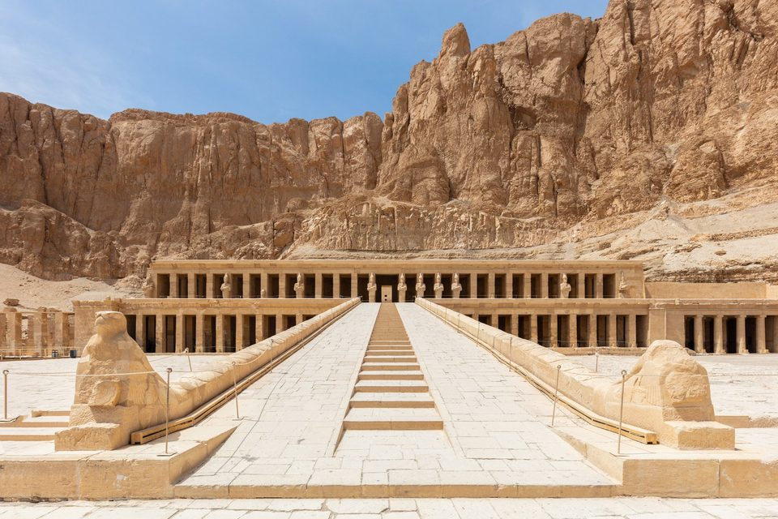

Egypt · Luxor
Temple of Hatshepsut (Deir el-Bahri) audio guide
12 stops · 17 min
Billed in ZAR
Unlocks in this browser after payment.
The queen who became king, and her temple in the cliffs. Listen here, or get the Earwise app to play as you walk.
Stops
- 1
Where the Cliffs Meet the Desert
At the entrance end of the temple, facing west toward the cliffs. This is stop 1 on the route.
Play0:00 / –:––Read along
Look ahead at the three broad terraces stepping up to the foot of the cliff. You are looking at Hatshepsut's great temple, in the bay called Deir el-Bahri. It stands on the west bank of the river, facing Karnak, the great temple of Amun on the far shore. Its builders called it Djeser-djeseru, meaning Holy of Holies.
The modern name is Arabic. Deir el-Bahri means the Northern Monastery. Long after the pharaohs, Christians turned the ruins into a monastery, and the name stuck.
Raise your eyes to the cliffs. They curve around the temple like the walls of a natural theatre, and the building seems to grow out of the rock. Above them rises a peak with a natural pyramid shape, known in Arabic as el-Qurn, the Horn. On the far side of that ridge lies the Valley of the Kings.
This bay was holy long before Hatshepsut. Egypt's antiquities ministry describes it as sacred to Hathor, the goddess who nursed the kings. People believed a form of Hathor lived inside these hills. Stelae show her as a cow, walking out of the mountain.
Some six hundred years before Hatshepsut, a Middle Kingdom king, Mentuhotep the Second, chose this spot for his tomb and temple. The remains of his temple lie just to your left. Hatshepsut's architects borrowed his idea of terraces and ramps, and made it larger.
- 2
The Queen Who Became King
In the lower court, the open space at the foot of the first terrace. This is stop 2 on the route.
Script and audio included when you buy - 3
The Lower Colonnades
At the foot of the central ramp, between the two lower colonnades. This is stop 3 on the route.
Script and audio included when you buy - 4
The Punt Colonnade
On the middle terrace, in the southern colonnade, to the left of the ramp. This is stop 4 on the route.
Script and audio included when you buy - 5
The Birth Colonnade
On the middle terrace, in the northern colonnade, to the right of the ramp. This is stop 5 on the route.
Script and audio included when you buy - 6
The Chapel of Hathor
At the south end of the middle terrace, at the shrine of Hathor. This is stop 6 on the route.
Script and audio included when you buy - 7
The Chapel of Anubis
At the north end of the middle terrace, at the entrance to the shrine of Anubis. This is stop 7 on the route.
Script and audio included when you buy - 8
The Upper Terrace and the Osiride Statues
At the front of the upper terrace, facing the colossal statues. This is stop 8 on the route.
Script and audio included when you buy - 9
The Erasure of Hatshepsut
In the upper courtyard, among the surviving walls. This is stop 9 on the route.
Script and audio included when you buy - 10
The Royal and Solar Cult Complexes
On the north side of the upper court, at the entrance to the complex of the sun cult. This is stop 10 on the route.
Script and audio included when you buy - 11
The Sanctuary of Amun
At the west end of the upper courtyard, in front of the rock-cut sanctuary. This is stop 11 on the route.
Script and audio included when you buy - 12
After the Pharaohs
At the south side of the upper courtyard, looking back over the terraces. This is stop 12 on the route.
Script and audio included when you buy
On the map
All 12 stop pins for this guide are marked. Open map